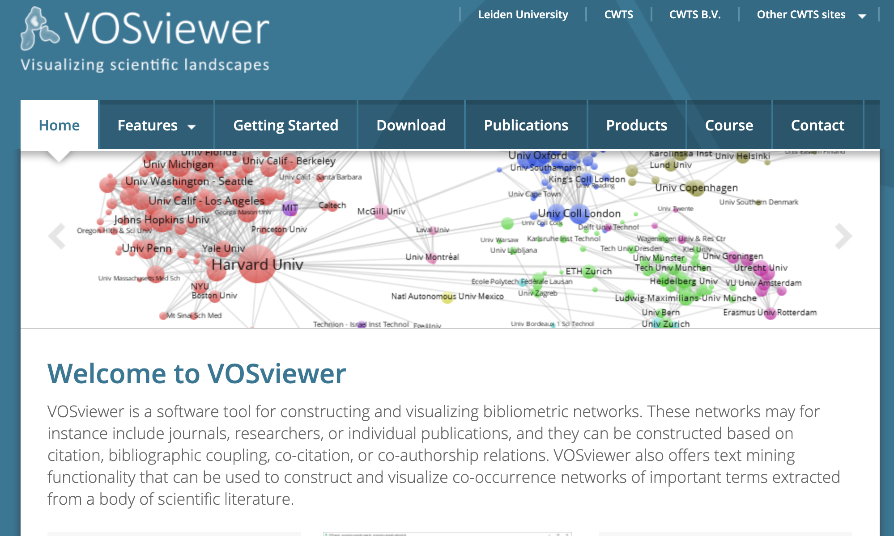
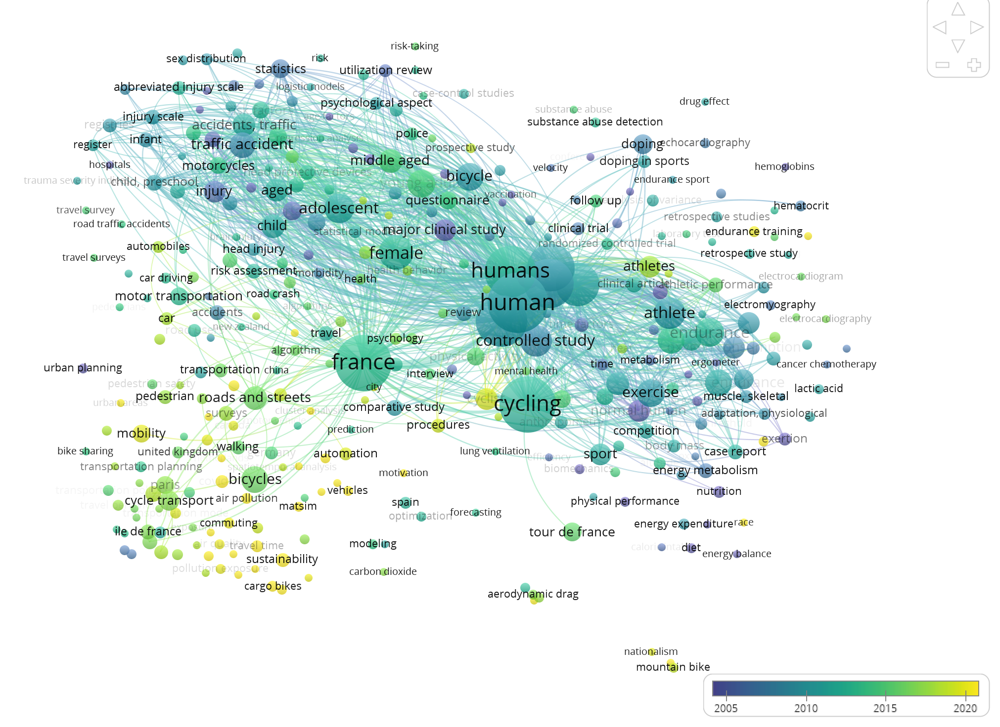
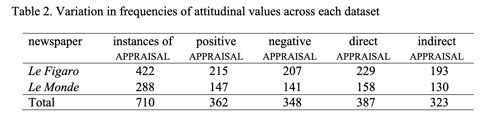
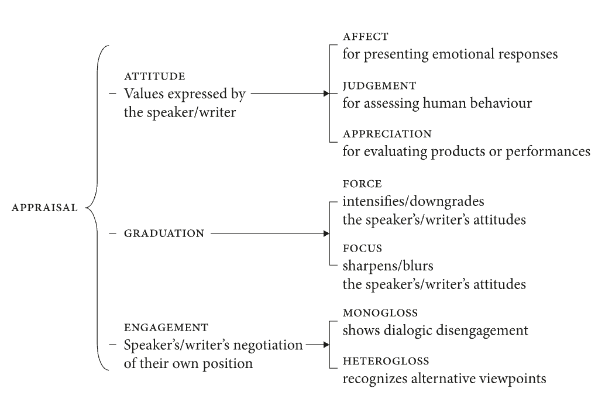
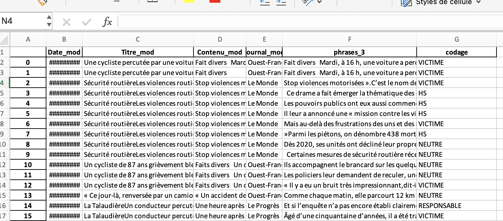
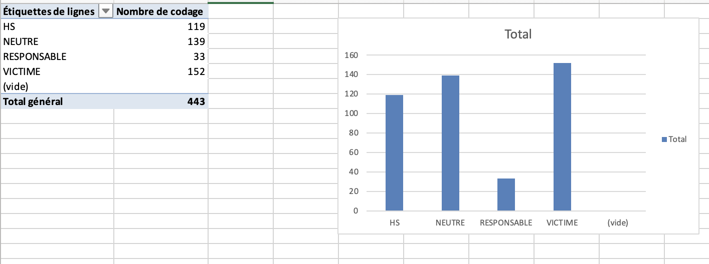
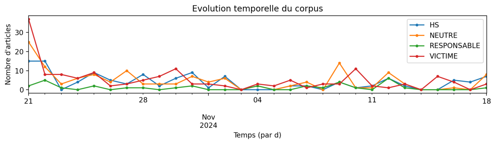

Exploration des savoirs
Analyser les données
Objectifs de la séance
- Passer des données à des résultats
- Choisir sa démarche
- Intégration dans la réflexion
Concrètement, dans 2 semaines : les avancements intermédiaires
- délimitation d’un corpus
- démarche pour l’analyse
Données = piliers de l’enquête
Vous en avez fait quoi pour le moment ?
Rappel des différents usages
- Importance (et difficulté) de cibler leur pertinence
- Intervenir à différents moments/modalités
- Explorer (baliser un domaine)
- Prouver (nécessite une question bien définie)
- Renforcer (fiabiliser et représenter)
Analyser des données demande du travail : soyons humble
Renforcer : l’importance de la triangulation
La triangulation : examiner sous plusieurs angles conceptuels, sources de données ou méthodes
Objectif : Renforcer la validité
- Observations directes + témoignages (entretiens)
- Entretiens + mesures
- Médias traditionnels + médias sociaux
- …
par exemple, construire une figure
Aller vers l’analyse
Différentes philosophies avec leurs avantages/inconvénients
- “pipelines automatisés dédiés” : logiciels spécialisés intégrant une philosophie
- “logiciels métiers” : boîtes à outils spécialisées
- “à la main” : décider de chaque choix proche des données
- “programmation” : formaliser les étapes (méta-boite à outils)
Penser le processus d’ensemble
De nombreuses étapes
- D’abord, un ensemble de données brutes
- Ensuite, des transformations de données
- Données/analyses intermédiaires
- Progressivement, stabilisation d’analyses
- Laisser de côté des pistes
- Résultats finaux
Éviter les impasses : la reproductibilité
Etre capable de refaire le plus simplement possible toutes les étapes (souvent très itératives et tortueuses) entre l’idée et les résultats

Notion centrale de la science ouverte
- A minima : documenter
- Carnet de recherche
- A maxima : formaliser les étapes
- Pouvoir tout rejouer
- Entre :
- Conserver les étapes intermédiaires
- Ne pas supprimer les étapes précédentes
Aujourd’hui deux focus :
- Pipeline automatisé de données scientométriques
- VosViewer
- Analyse des données de presse “à la main”
- Grille de codage + Tableur (Spreadsheat Google)
Retour des vélos
Corpus sur le traitement de la question vélo:
- Scopus : qui sont les chercheurs qui travaillent sur ces questions ?
- Europresse : comment est couverte l’accidentologie ?
Analyse scientométrique
Données scientométriques
- Des données complexes
- Mots-clés, auteurs, affiliations, contenu, …
- Des données structurées
- Scopus permet de générer un fichier propre
- Un domaine à part entière : la scientométrie
Conséquence : des outils calibrés (métriques, manières de faire, etc.)
Quelles questions poser à partir d’un corpus scientométrique?
Au sens large : production des connaissances et les dynamiques d’expertise.
- Quelles sont les thématiques abordées ?
- Qui sont les auteurs ? Comment sont-ils reliés entre eux ? Est-ce qu’ils forment une communauté ?
- Comment les sujets sont connectés ? Comment ils ont évolués dans le temps ?
- Quels sont les articles les plus importants ? Les plus centraux ?
- …
Constituer le corpus avec Scopus
- Bien calibrer la question
- Taille raisonnable
- Vérifier en lisant quelques articles
- Faire évoluer si besoin les règles de filtrage
- Garder une trace de la requête
- Choisir un format d’export pertinent (CSV est bien)
Comment la science parle des vélos
( bike* OR cyclist* )> 20000( bike* OR cyclist* ) AND france= 352
Rappel : l’analyse commence avec les données
- Sélectionner/filtrer le corpus
- Transformer les données
- Recoder
- Compléter
- Fusionner
- Supprimer
Par exemple, ne pas hésiter à constituer plusieurs corpus et faire des comparaisons
VOSViewer : réseaux & statistiques
Un outil dédié issu de la recherche dont la philosophie est de créer des cartes relationnelles à partir de données scientométriques.

Deux mots sur l’analyse de réseaux
- des entités qui sont connectées
- des noeuds (personnes, mots, etc.)
- des liens/relations (proche, contenu, etc.)
- en mettant toutes ces relations ensemble : un réseau
- permet de poser la question:
- quelle forme générale a ce réseau ?
- comment sont liées les entités ?
- est-ce que les entités sont proches ou éloignées ?
Démo : analyser un corpus
Est-ce qu’il existe une communauté de chercheurs spécialisée sur le vélo en France ?
Quelles sont les références les plus mentionnées ?
Lançons VOSVIEWER !
Avoir une vision chronologique

Remarques lors de l’analyse
- Importance de comprendre les métriques :
- Que représente la couleur ?
- Que représente la taille ?
- Qu’est-ce qu’est un lien ?
- Possibilité d’aller plus loin
- Extraire les éléments non pertinents
- Thesaurus pour réunir
Les limites
- Pas mal de possibilités
- Mais sur des données bien calibrées
- Avec une philosophie intégrée spécifique
- Et des marges de manoeuvre limitées
Comment faire quand on veut construire son propre cadre d’analyse ?
Analyse de presse
Presse : des données moins structurées
- Des méta-informations (journal, etc.)
- Du texte
Des questions souvent liées au contenu
- Quels sujets sont traités ?
- Comment ils évoluent ?
- Qui est mentionné ?
Mais pas seulement (Combien d’articles sur un sujet sur une période, etc.)
Un cadre méthodologique à développer
Comment passer du texte non-structuré à des données structurées interprétables ?
- Graphique
- Tableau croisé
- …

D’abord, il faut des concepts
Articulés à une problématique

Ensuite, une opérationnalisation
Le codebook : adosser chaque catégorie à une définition
- Explicite
- Opérationnelle
- Simple
Toujours plus facile à dire qu’à faire…
Différentes stratégies pour l’analyse de texte
Et ensuite une implémentation
- Dictionnaire de mots à détecter automatiquement
- Découper le texte en élément et les catégoriser
- Identifier des éléments dans le texte
- LLM …
(Les différents éléments peuvent être combinés)
Un flux de travail
- Lire pour connaître ses données
- Développer une grille de codage :
- Cible : article entier ? paragraphe ? phrase contenant certains mots ?
- Codage : catégories et des règles pour les appliquer
- Produire un tableau (excel ou autre) adapté
- Filtrer son corpus
- Coder une dizaine d’éléments pour vérifier que la grille fonctionne
- Faire évoluer la grille de codage si besoin
- Coder l’ensemble du corpus
- Faire des statistiques (comptage, ou plus si affinité)
Remarques sur le codage
- Il y a toujours des cas ambigus, c’est normal
- Ajouter une colonne pour garder des commentaires
- Toujours garder une possibilité de revenir à l’article initial
- Surtout si l’unité de travail est plus petite
- Possibilité d’avoir des codages complexes :
- Plusieurs dimensions
- Dimension qui code l’intensité/la certitude
Mettons nous à l’oeuvre
Représentations des cyclistes dans la presse
Est-ce que ça a changé ces 4 dernières années ? Comment parle-t-on des cyclistes dans la presse ? Est-ce qu’on parle davantage des violences que subissent les cyclistes ? Est-ce qu’on parle des inégalités liées au vélo ?
Choix d’une question : comment couvre-t-on les accidents ?
D’abord le corpus
- Requête europresse
- accident & vélo* | cycliste*
- quelle portée ? volume ?
- Récupérer les données
- Fichier HTML
Consolider le corpus
Passer d’un fichier HTML à un tableau manipulable : https://dstool.onrender.com/
Outils disponibles
- Transformer le corpus
- Produire un graphique
- Extraire des phrases autour de mots clés
Puis à la main
- Enlever les entrées non pertinentes
- Enlever les doublons
- Enlever les colonnes inutiles
un fichier clean.xlsx
Décrire le corpus
- Statistiques de colonnes
- Colonne journal : plein de soucis
- Dupliquer la colonne
- Corriger à la main (rechercher/remplacer)
- Colonne journal : plein de soucis
- Et souvent des données sales : il faut transformer les données
- A la main
- Long
- Solution des macros
- Complexe
- Des outils adapté : programmation/OpenRefine
- A la main
Ajouter une dimension/variable
Principe : transformer le texte en une nouvelle variable (présence d’un acteur, tonalité, nombre de mots, nombre d’occurence d’un terme, etc.)
- Permettre de compter les occurences
- De croiser avec d’autres éléments
- Journal
- Date
- Autre variable
Comment faire? Cas d’un codage du traitement des accidents
Définir la grille de codage
- Définir les variables le plus clairement possible
- Avoir des exemples
- Identifier l’échelle
Variables sur les accidents vélo à Paris
- Variable : accident & vélo
- Cycliste victime
- Ambigu
- Cycliste responsable
- Ne parle pas d’accident
- A l’échelle de la phrase
Du texte à la phrase
Je veux m’intéresser aux phrases spécifiques
Article entier > phrases spécifiques
- présence de mots/combinaisons de mots
- phrase, groupe de phrases, etc.
Extraire des phrases
Outil sur dstool à partir de regex
C’est quoi une expression régulière
Regex = expression régulière -> un pattern de texte
Exemples :
- vélo : présence de la chaîne vélo
- vélo|Vélo : l’un ou l’autre
- \b\w{5}\b : mot de 5 lettres
- \b(chat|chien)\b : mots “chat” ou “chien” dans un texte
- \w+@\w+\.\w+ : adresse mail
- \d{2}/\d{2}/\d{4} : date
Présent dans de nombreux logiciels/langages de programmation
Tableau des extraits parlant d’accidents
- Toutes les phrases mentionnant un terme
- cycliste (une regex simple)
- Garder une phrase avant et une phrase après
- Avoir du contexte
- Lire et coder chaque élément
Coder (collaborativement)
En pratique :
- Un document partagé Spreadsheet
- Se mettre d’accord sur les règles
- Faire un test sur un petit nombre d’éléments avant de se lancer
- Ajuster
- Si un doute, prendre des notes dans une colonne dédiée
Faisons un peu de codage
Données codées

Analyser
Beaucoup d’options disponibles avec les tableurs :
- Distribution (fréquence absolue, %)
- Statistiques de colonnes
- Tableaux croisés dynamiques
- Insertion > Tableau dynamique
- Graphiques
- Insertion > Graphique
Réussir à avoir un graphique cohérent signifie avoir construit les données adaptées
Outil
Une fois le codage réalisé, utiliser l’outil en ligne pour avoir l’évolution
Commencer par des analyses simples

Evolution temporelle avec dstool

D’autres stratégies d’analyse des données de presse
- Évolutions temporelles de plusieurs sous-corpus
- entre journaux, entre périodes
- Détection de mots/comptage avec les macro excel
- Identifier des entités spécifiques
- Remplacer par un token (par exemple : Le premier ministre, le PM, XXX par [ministre])
Et pour les entretiens ?
- Entretiens == du texte
- Démarche similaire
- Mais un corpus pas encore constitué
Donc :
- Construire vous-même un tableau
- une ligne par entretien, une colonne par info
- ajouter les variables d’intérêt
- bien normaliser
Encore plus de solutions
De nombreux logiciels
- Nettoyer des données avec OpenRefine
- Statistiques avec Jamovi
- Analyse textuelle avec Iramuteq
- Faire des cartes avec khartis ou Google Maps
- Analyse des entités dans les textes avec Cortext
Les possibilités de la programmation
Par exemple faire un beau graphique (R ou Python)
- Données bien structurée
- Réflexion sur les objectifs
- Réaliser ensemble
Puissance des LLM
Faire tourner un LLM localement (ollama) ou utiliser une API et des scripts pour faire les requêtes avec des prompts.
La suite ?
Mettre en oeuvre
- Approches vues aujourd’hui sur votre sujet
- Réfléchir éventuellement à des approches plus spécifiques
Mot d’ordre : intégrer l’analyse à la problématique dans le dossier d’avancement (quitte à restreindre l’ambition).